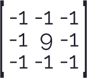
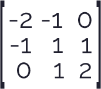
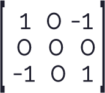
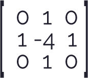
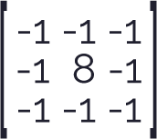
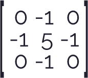
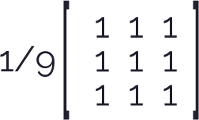
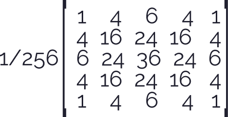
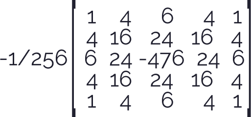

Video Convolution Matrix
BLUR, SHARPEN, EMBOSS, EDGE DETECTION,UNSHARP, AND MORE, Framerate
Una de las características más importantes en el procesamiento de videos es la frecuencia de fotogramas por segundo, el cerebro humano tiene la capacidad de procesar
de 10 a 12 fotogramas por segundo; en caso de aumentar esa tasa. el cerebro lo percibe como movimiento, característica muy importante al momento de exponer una imagen.
Al igual que en el estudio de procesamiento de imágenes, que se vio en el ejemplo Image Convolution Matrix
se realizó la siguiente implementación que muestra cómo realizar el procesamiento de escala de grises en videos.
Para este fin se crearon dos lienzos, el primero permite visualizar el video original, el segundo lienzo es el encargado de mostrar los cambios
realizados en tiempo real.
La siguiente implementación se encarga de medir la tasa de fotogramas por segundo, al realizar la razón entre la cantidad de fotogramas que se expusieron desde el tiempo 0 hasta la actualidad y
la variables que se encarga de obtener la diferencia de tiempo transcurrido en el paso de los fotogramas. Adicionalmente
muestra los cambios al aplicar diferentes escalas de grises, utilizando los mismos algoritmos que permitieron realizar el procesamiento de imágenes en los ejemplos anteriores, pero esta vez modificando los pixeles de una imagen capturada por video.
| Tecla | Operacion | Kernel(Nucleo) | Eficiencia |
|---|---|---|---|
 |
Identidad | 60 F/S | |
 |
Acentuar Bordes |  | 2.32 F/S |
 |
Repujado |  | 2.14 F/S |
 |
Deteccion de Bordes 1 |  | 2.34 F/S |
 |
Deteccion de Bordes 2 |  | 2.26 F/S |
 |
Deteccion de Bordes 3 |  | 2.24 F/S |
 |
Enfocar |  | 2.30 F/S |
 |
Desenfoque de cuadro |  | 2.36 F/S |
| Desenfoque Gaussiano |  | 1.16 F/S | |
| Unsharp Masking |  | 1.12 F/S |
Como podemos observar en la implementacion, la tasa de fotogramas por segundo decae con respecto a su valor original, pero en comparacion al ejemplo de escala de grises este tiene un muy mal comportamiento,ya que se observa muy poca fluidez del movimiento en el video, llegando a observarse el moviviento en aproximadamente 2 F/S, por lo cual se puede decir que el procesamiento de las mascaras se hace mas complejo, por tanto no puede procesarlo tan rapido, reduciendo asi la fluidez del video.